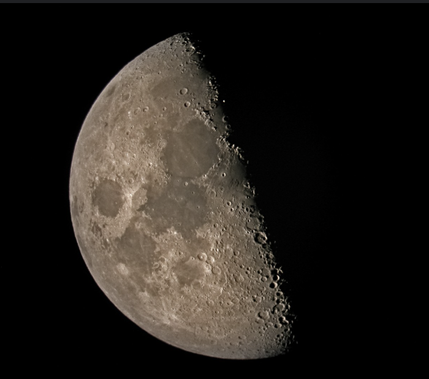

New MoonWaxing Crescent MoonFirst Quarter MoonWaxing Gibbous MoonFull MoonWaning Gibbous Moon

Last Quarter MoonWaning Crescent Moon
How the different phases impact moods and behaviors
Why does the moon impact our mood?
The Moon has certain energetic properties that can be heightened
or diminished depending on the phase. The Moon also has a powerful
gravitational pull on the Earth that impacts the rising and falling
of the tide waters. Human bodies are 72% water so it stands to
reason that the gravitational effect of the Moon on the tides
applies to us. Humans also have the most complex neurological
system of any creature. Nerves work by sending electrical impulses/energy
through our bodies, so the Moon's energetic properties
can directly impact our nervous system, according to yogi gurus.
The New Moon Effects
The New Moon is is a time of new beginnings. It's the perfect time
to set intentions, goals, or start a new project or habit. The New
Moon starts the waxing moon, which is also commonly referred to as
the growing moon. When you start something on this moon, you use the
Moon's growing energy to help grow your progress. Moods experienced
during this time are usually centered around a calmness, and having
motivation for the upcoming lunar cycle. This makes it a good time
for decision making or learning something new. However, some may
feel a drop in energy and desire some quiet time to reset.
The Waxing Crescent Moon Effects
The Waxing Crescent Moon is often associated with feelings of energy,
ambition, and a positive mindset. It's a time when people may feel
motivated to carry out intentions set during the New Moon. This phase
is also associated with growth, creativity, and developing new ideas.
Some interpretations suggest that the ambition associated with this
phase may lead to stubbornness or a tendency to be more argumentative.
The First Quarter Moon Effects
The First Quarter Moon is often associated with a boost in mood,
motivation, and clarity. However, if progress towards goals or intentions
feels slow or stalled, it can lead to feelings of frustration or
impatience. Inner conflicts may happen during this phase, making
it difficult to make decisions. External pressures may also be amplified,
giving rise to feeling under scrutiny or societal expectations. Self
care will be important during this moon, especially participating
in grounding activities like spending time in nature.
The Waxing Gibbous Moon Effects
The Waxing Gibbous Moon is often associated with increased energy,
preparing for the Full Moon's peak energy. It's a time for analyzing
your progress and making necessary adjustments to help you in your
goals/intentions. This phase may bring challenges or require changes
to plans, which will test your patience.
The Full Moon Effects
The Full Moon is the phase of the lunar cycle where the Moon reaches
peak luminosity and energy. Everything is heightened during this
phase, which is why proper preparation is necessary. The Full Moon
does not cause madness, but it will amplify whatever emotions are
present. Emotions, sensitivity, and even anxiety may be elevated
during this time. Mood wings may be more pronounced, and some might
experience sleep disturbances.
The Waning Gibbous Moon Effects
The Waning Gibbous Moon is a time of shifting from the Moon's energetic
peak, to starting to come down in the waning moon, often referred
to as the declining moon. This phase is often associated with introspection,
release, and gratitude. The declining moon is the perfect time to
let go of old habits, negative emotions, or anything that holds you
back. Beginning to let go of the old can prepare you for new intentions
and getting ready fro new goals. Some may find themselves feeling more
sensitive during this time.
The Last Quarter Moon Effects
The Last Quarter Moon's waning energy is associated with introspection
and reflecting on the previous cycle, paving the way for personal
growth. This phase is the best for any cleansing or purifying act
(such as taking a detox bath or clearing out old patterns). Some
may experience emotional sensitivity as they're confronted with
releasing what no longer serves them. The Last Quarter can also
bring about shifts in energy, prompting a desire to reorganize and
create space for new intentions.
The Waning Crescent Moon Effects
The Waning Crescent Moon is the final phase of the lunar cycle before
a New Moon arises. Like the other waning phases, it's associated with
introspection and evaluating your progress and growth. It is also
beneficial for releasing the old and preparing for new. It's common
for people to experience tiredness during this phase, as the Moon's
energy is fading. This phase is a time for rest, self care, finding
inner peace, and reconnecting with yourself.